The grant officer wants a speaker script with the deck, so add speaker notes to every slide in this deck — one or two sentences each summarising that slide's point — and save it.
THINKINGThe task: add speaker notes to all 6 slides and save. I need to use the Notes view or the notes panel below each slide. Let me first check if the notes panel is visible. The current view is Normal view showing the slide. I should enable the notes area. The best approach is to switch to View > Notes, or use the notes panel at the bottom.
Let me start by examining the slides to understand content, then add notes. I'll use the Notes view which is efficient for typing notes per slide. Let me first close the notification bars and go to View > Notes.
Actually, I can see the slide titles already:
1. Riverside Community Food Bank - Hillcrest Foundation Grant Request 2025
2. Who We Serve
3. 2024 In Numbers
4. The Gap
5. What We Are Asking For
6. Expected Impact
I should read each slide's details to write accurate notes. Let me zoom into the slide panel content or click each slide. But I can reasonably infer content. To write good summaries I should see each slide's bullet text. Let me click through slides to read them, or I can read from thumbnails (too small).
Best plan: Use Notes view. Switch via View menu > Notes. Then for each slide type notes, and use the slide panel to navigate. Let me first read each slide by clicking through them in normal view to get content. Let me start by enabling the notes panel in normal view which shows notes below the slide.
Let me first close the info bars, then go to View menu.
ACTIONI'll start by closing the notification bars and reading each slide's content so I can write accurate notes. Let me first look at the slides more closely.
EXECUTED (pyautogui in VM)pyautogui.click(174, 515)
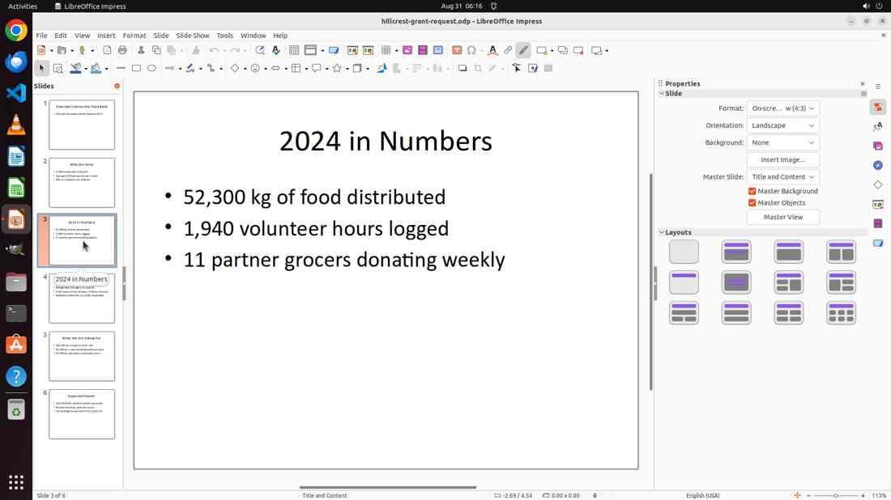
step 5 22:16:24
THINKINGI'm looking at a slide about 2024 performance metrics showing food distribution volume, volunteer hours, and partner grocer participation. I should check slide 4 to see what else is being presented.
EXECUTED (pyautogui in VM)pyautogui.click(174, 640)
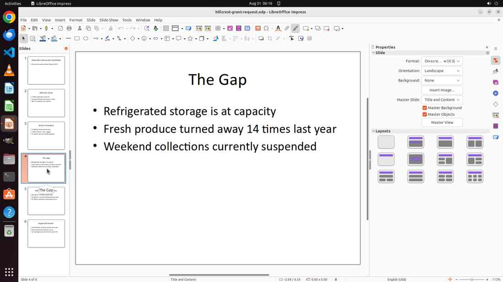
step 6 22:16:31
THINKINGI'm looking at a slide about operational gaps in food distribution systems, covering capacity constraints, produce waste, and service interruptions. Moving on to review slide 5.
EXECUTED (pyautogui in VM)pyautogui.click(174, 765)
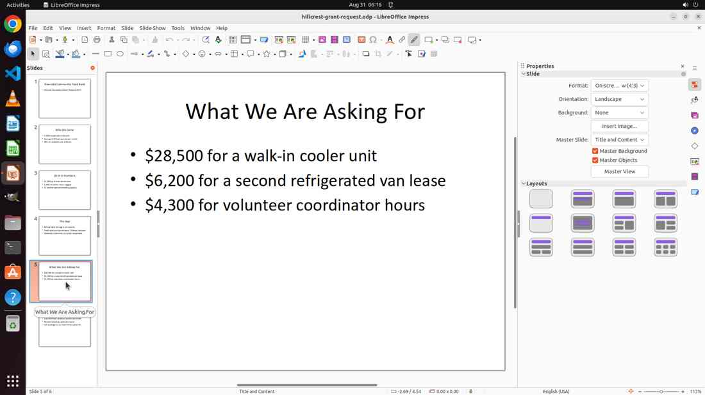
step 7 22:16:41
THINKINGLooking at the budget breakdown for food distribution infrastructure, I can see the three main line items and now I'm moving on to review the next slide to see what else is included in the overall proposal.
EXECUTED (pyautogui in VM)pyautogui.click(174, 892)
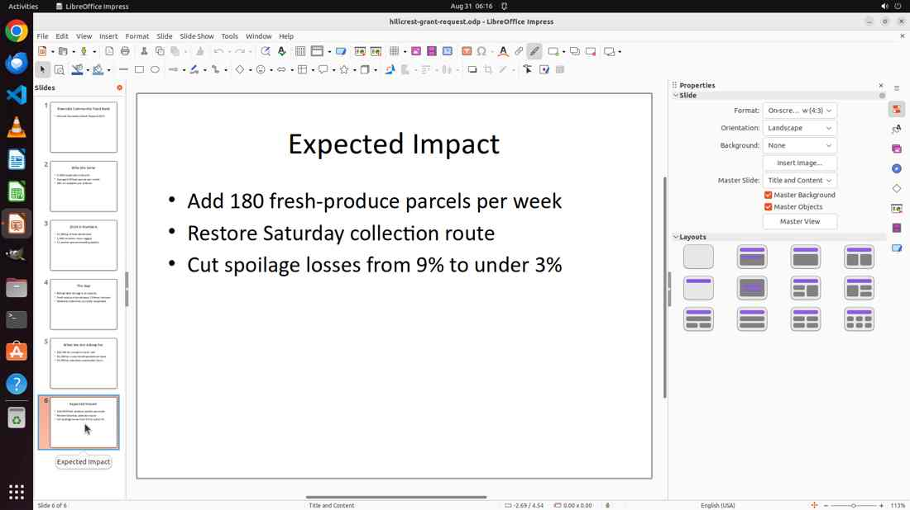
step 8 22:17:13
THINKINGNow I have all 6 slides' content:
1. Riverside Community Food Bank - Hillcrest Foundation Grant Request 2025 (title)
2. Who We Serve: 4,180 households in Ward 6; avg 620 food parcels/month; 38% children
3. 2024 in Numbers: 52,300 kg food distributed; 1,940 volunteer hours; 11 partner grocers
4. The Gap: refrigerated storage at capacity; fresh produce turned away 14 times last year; weekend collections suspended
5. What We Are Asking For: $28,500 cooler; $6,200 refrigerated van lease; $4,300 coordinator hours
6. Expected Impact: add 180 fresh-parcels/week; restore Saturday route; cut spoilage from 9% to under 3%
Now I'll switch to Notes view to add speaker notes. Let me use View > Notes.
ACTIONI now have all slide contents. Let me switch to Notes view to add the speaker notes efficiently.
EXECUTED (pyautogui in VM)pyautogui.click(201, 150)
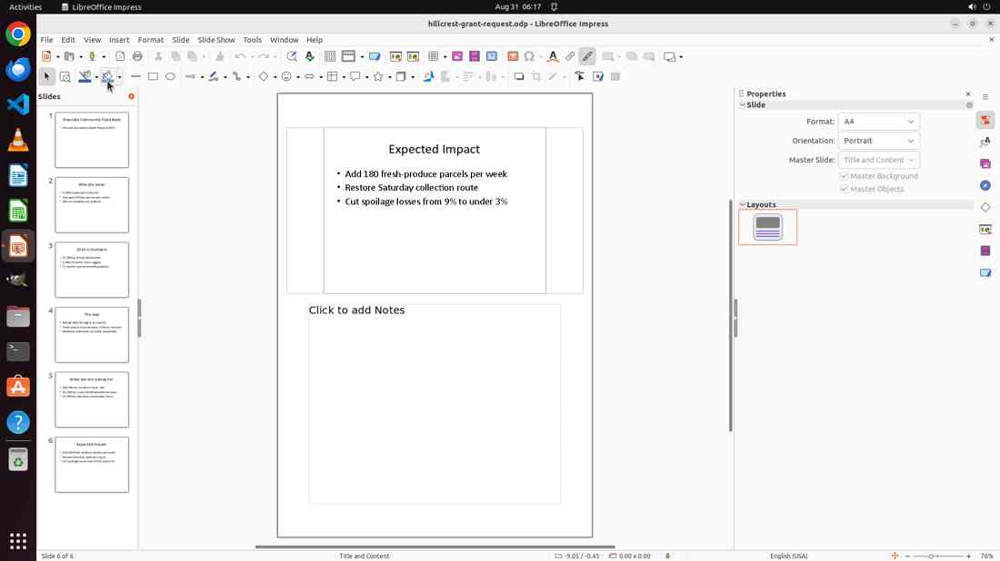
step 10 22:18:36
THINKINGNow I'm in Notes view, showing slide 6 with a "Click to add Notes" area. I'll navigate to slide 1 first and add notes for each slide. Let me click slide 1 in the panel, then click the notes area and type. I'll do this for each slide.
Let me go to slide 1 first.
ACTIONI'm in Notes view now. Let me start with slide 1. I'll click slide 1 in the panel, then click the notes area and type.
EXECUTED (pyautogui in VM)pyautogui.click(174, 264)
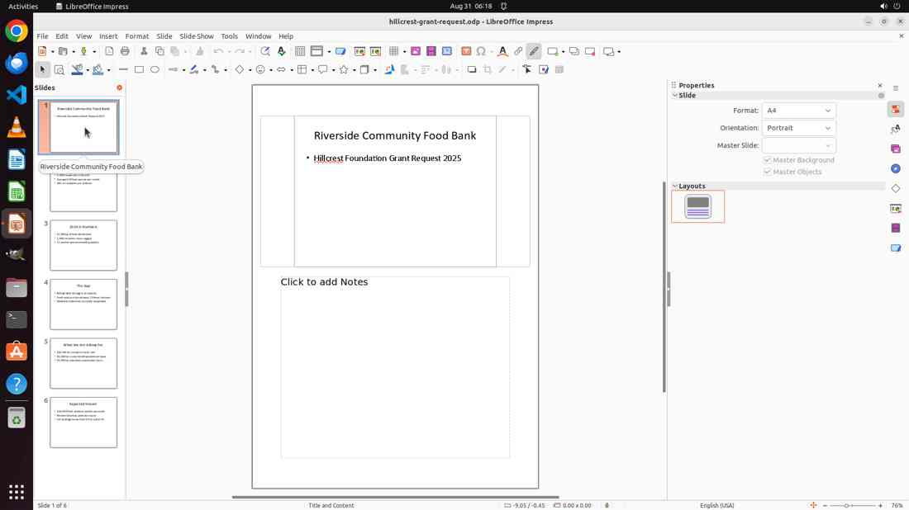
step 11 22:19:32
THINKINGSlide 1 is selected with a notes area. Let me click into the notes area and type the note for slide 1. Then I'll proceed to the next slides by clicking their notes areas. I'll batch the click + type for slide 1.
ACTIONNow I'll click the notes area for slide 1 and type its note.
EXECUTED (pyautogui in VM)pyautogui.click(830, 643)
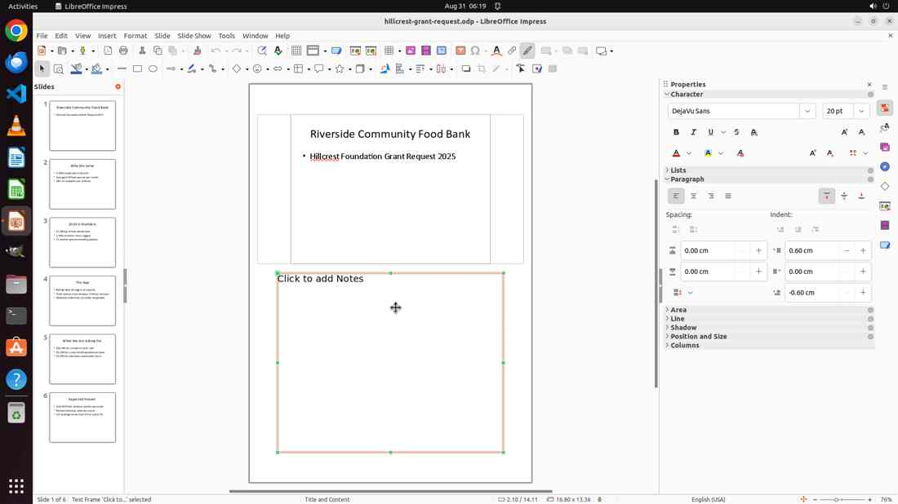
step 12 22:20:25
THINKINGThe text frame is selected (single click selected it). I need to double-click or press Enter/F2 to enter edit mode, then type. Let me double-click into it to enter text edit mode, then type the note.
ACTIONThe text frame is selected. Let me double-click to enter edit mode and type the note for slide 1.
EXECUTED (pyautogui in VM)pyautogui.doubleClick(830, 643)
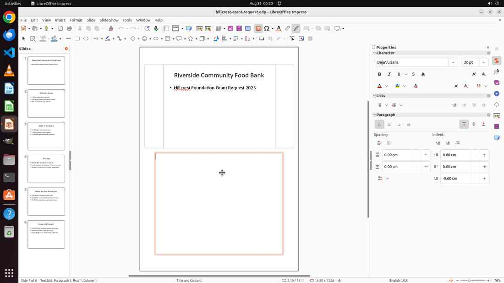
step 13 22:21:03
THINKINGI'm in text edit mode (status bar shows "TextEdit: Paragraph 1, Row 1, Column 1"). Now I'll type the note for slide 1. Then I need to move to slide 2. To move between slides while in notes view, I'll click the next slide in the panel, then double-click its notes area.
Let me type slide 1 note now.
ACTIONI'm in edit mode. Let me type the note for slide 1.
TOOL CALL<tool_call>
<function=computer_use>
<parameter=action>
type
</parameter>
<parameter=text>
Good morning, and thank you for the opportunity to present. This deck outlines our 2025 grant request to the Hillcrest Foundation to strengthen the Riverside Community Food Bank's capacity to serve our neighbors.
</parameter>
</function>
</tool_call>
EXECUTED (pyautogui in VM)pyautogui.typewrite("Good morning, and thank you for the opportunity to present. This deck outlines our 2025 grant request to the Hillcrest Foundation to strengthen the Riverside Community Food Bank's capacity to serve our neighbors.")
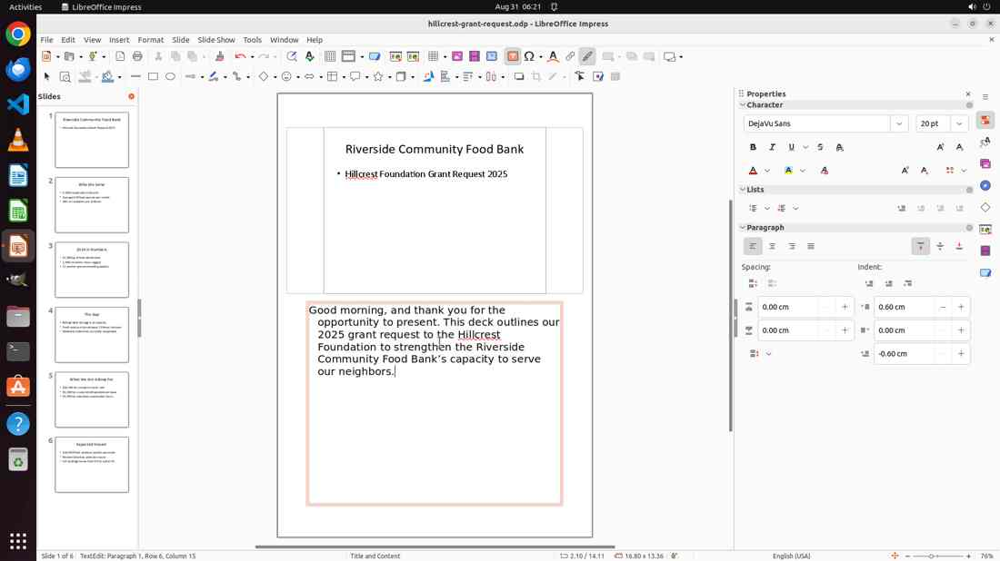
step 14 22:21:22
THINKINGSlide 1 note added successfully. Now slide 2: click slide 2 in panel, then double-click its notes area, then type. The notes area is at the same location (~555, 430). Let me batch: click slide 2, double-click notes, type.
ACTIONSlide 1 note added. Now slide 2 — I'll click it in the panel, double-click the notes area, and type.
EXECUTED (pyautogui in VM)pyautogui.click(174, 392)
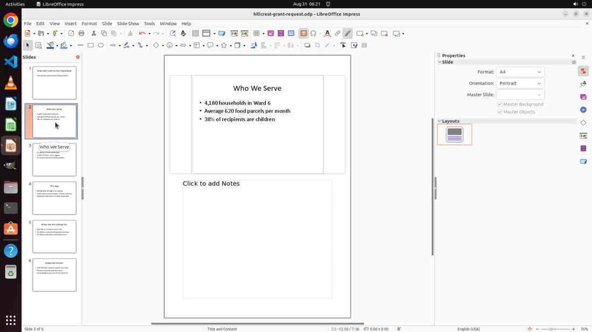
step 15 22:22:30
THINKINGSlide 2 is now shown. I confirmed content: 4,180 households in Ward 6, avg 620 food parcels per month, 38% children. Now double-click the notes area and type the note.
EXECUTED (pyautogui in VM)pyautogui.doubleClick(830, 643)
step 16 22:23:24
THINKINGThe frame is selected but not in edit mode yet (status shows "Text Frame selected"). A double-click sometimes only selects it. I need to enter edit mode. The status bar says "Text Frame 'Click to...' selected". Let me double-click again to enter text edit, then type.
ACTIONThe frame is selected. Let me double-click again to enter edit mode and type the note.
EXECUTED (pyautogui in VM)pyautogui.doubleClick(830, 643)
step 17 22:24:11
THINKINGNow in TextEdit mode (status shows "TextEdit: Paragraph 1, Row 1, Column 1"). Let me type the slide 2 note.
ACTIONNow in edit mode. Let me type the note for slide 2.
TOOL CALL<tool_call>
<function=computer_use>
<parameter=action>
type
</parameter>
<parameter=text>
Our food bank supports 4,180 households in Ward 6, distributing an average of 620 food parcels each month. With 38% of our recipients being children, addressing this need is both urgent and deeply impactful.
</parameter>
</function>
</tool_call>
EXECUTED (pyautogui in VM)pyautogui.typewrite("Our food bank supports 4,180 households in Ward 6, distributing an average of 620 food parcels each month. With 38% of our recipients being children, addressing this need is both urgent and deeply impactful.")
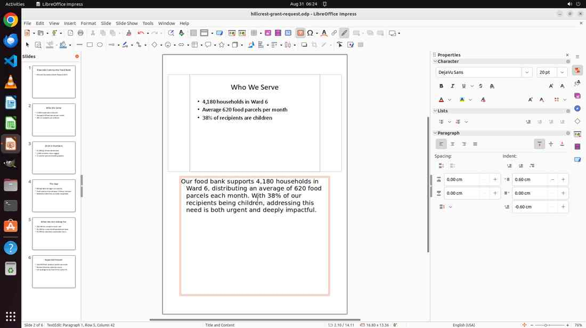
step 18 22:25:46
THINKINGSlide 2 done. Now slide 3: click slide 3 in panel, then I need to enter edit mode. I learned that a single click on the notes area selects the frame, then a double-click enters edit. Actually the reliable pattern: click slide in panel, then double-click notes area once - but the first double-click just selected. Let me observe: for slide 2, first double-click selected the frame (status: Text Frame selected), second double-click entered edit. So the pattern requires two double-clicks OR: click slide, single-click notes (selects), then F2 or type directly. Actually pressing F2 enters edit mode for a selected text frame. Let me use: click slide 3, click notes area (selects), press F2 (enter edit), type. That's cleaner. Let me do that.
ACTIONSlide 2 done. For slide 3, I'll select the frame and press F2 to enter edit mode reliably.
EXECUTED (pyautogui in VM)pyautogui.click(174, 515)
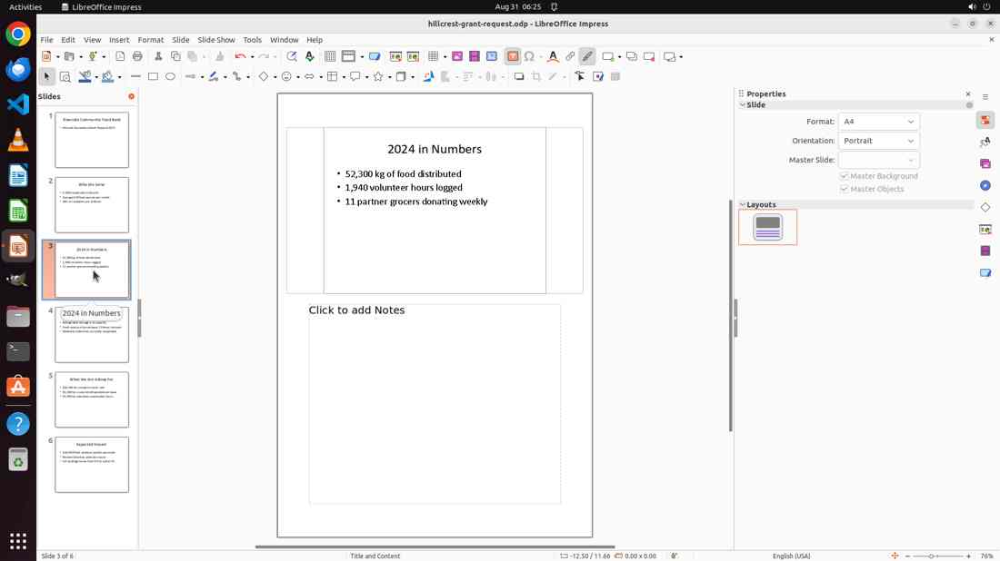
step 19 22:26:42
THINKINGSlide 3 shown: 52,300 kg of food distributed, 1,940 volunteer hours logged, 11 partner grocers donating weekly. Now click the notes area to select it, then F2 to enter edit, then type.
TOOL CALL<tool_call>
<function=computer_use>
<parameter=action>
type
</parameter>
<parameter=text>
In 2024, we distributed 52,300 kg of food, logged 1,940 volunteer hours, and welcomed 11 partner grocers donating weekly. These numbers show a strong, well-established operation that delivers real results.
</parameter>
</function>
</tool_call>
EXECUTED (pyautogui in VM)pyautogui.typewrite("In 2024, we distributed 52,300 kg of food, logged 1,940 volunteer hours, and welcomed 11 partner grocers donating weekly. These numbers show a strong, well-established operation that delivers real results.")
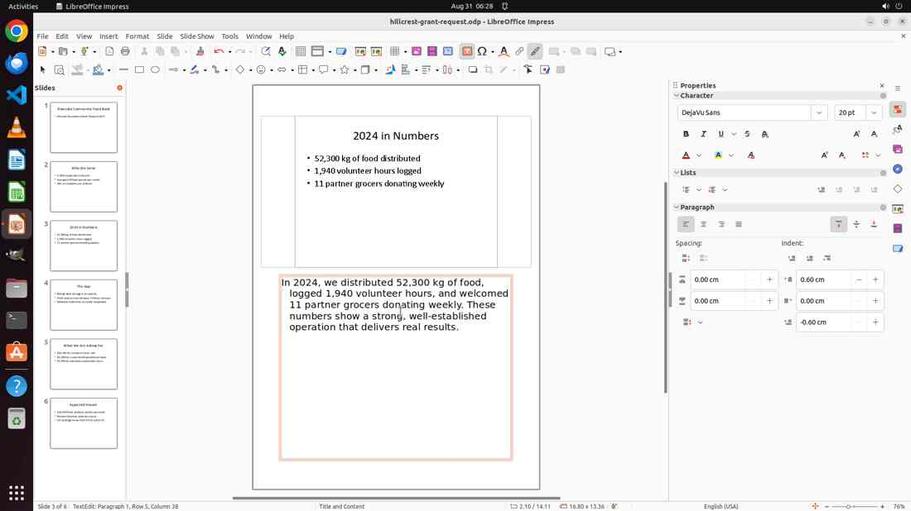
step 22 22:29:01
THINKINGSlide 3 done. Now slide 4. I learned the reliable pattern: click slide in panel → click notes area (selects) → F2 → type. Let me batch these for slide 4. I'll first click slide 4, then click notes area, then F2, then type. But I should verify content of slide 4 first. From thumbnail it's "The Gap". Let me click slide 4 and read, then proceed. I'll do click slide 4 first to see content.
ACTIONSlide 3 done. Let me go to slide 4 and read its content.
EXECUTED (pyautogui in VM)pyautogui.click(174, 640)
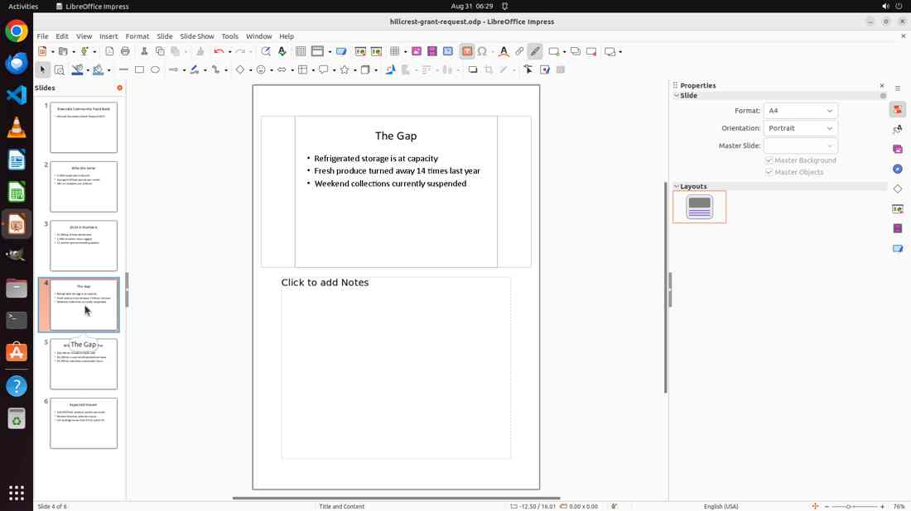
step 23 22:29:41
THINKINGSlide 4: The Gap - refrigerated storage at capacity, fresh produce turned away 14 times last year, weekend collections currently suspended. Now I'll batch: click notes area, F2, type. These are predictable. Let me batch them.
ACTIONNow I'll add the note for slide 4. I'll click the notes area, press F2, and type.
TOOL CALL<tool_call>
<function=computer_use>
<parameter=action>
type
</parameter>
<parameter=text>
Despite this success, we have hit a critical gap: our refrigerated storage is at full capacity, we turned away fresh produce 14 times last year, and weekend collections are currently suspended. This is the problem this grant solves.
</parameter>
</function>
</tool_call>
EXECUTED (pyautogui in VM)pyautogui.typewrite("Despite this success, we have hit a critical gap: our refrigerated storage is at full capacity, we turned away fresh produce 14 times last year, and weekend collections are currently suspended. This is the problem this grant solves.")
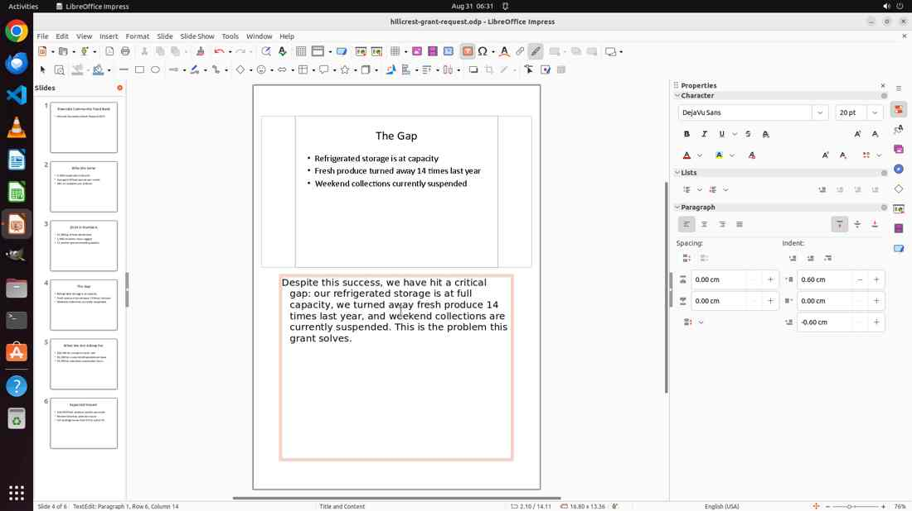
step 26 22:31:49
THINKINGSlide 4 done. Now slide 5. Let me click slide 5 to see content, then add note.
EXECUTED (pyautogui in VM)pyautogui.click(174, 765)
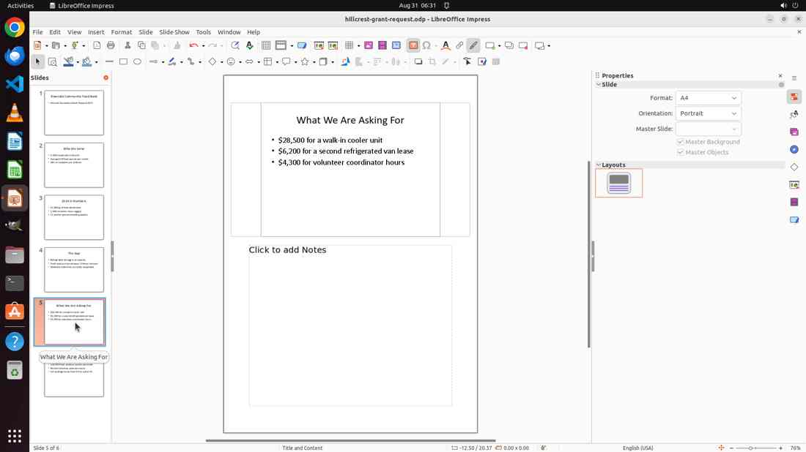
step 27 22:31:57
THINKINGSlide 5: What We Are Asking For - $28,500 walk-in cooler, $6,200 second refrigerated van lease, $4,300 volunteer coordinator hours. Total = $39,000. Now add note. Click notes area, F2, type.
TOOL CALL<tool_call>
<function=computer_use>
<parameter=action>
type
</parameter>
<parameter=text>
We are requesting a total of $39,000: $28,500 for a walk-in cooler unit, $6,200 for a second refrigerated van lease, and $4,300 for volunteer coordinator hours. Each item directly addresses the capacity gap we described.
</parameter>
</function>
</tool_call>
EXECUTED (pyautogui in VM)pyautogui.typewrite("We are requesting a total of $39,000: $28,500 for a walk-in cooler unit, $6,200 for a second refrigerated van lease, and $4,300 for volunteer coordinator hours. Each item directly addresses the capacity gap we described.")
TOOL CALL<tool_call>
<function=computer_use>
<parameter=action>
type
</parameter>
<parameter=text>
With this funding, we expect to add 180 fresh-produce parcels per week, restore our Saturday collection route, and cut spoilage losses from 9% to under 3%. This investment directly expands our reach and efficiency in serving the community.
</parameter>
</function>
</tool_call>
EXECUTED (pyautogui in VM)pyautogui.typewrite("With this funding, we expect to add 180 fresh-produce parcels per week, restore our Saturday collection route, and cut spoilage losses from 9% to under 3%. This investment directly expands our reach and efficiency in serving the community.")
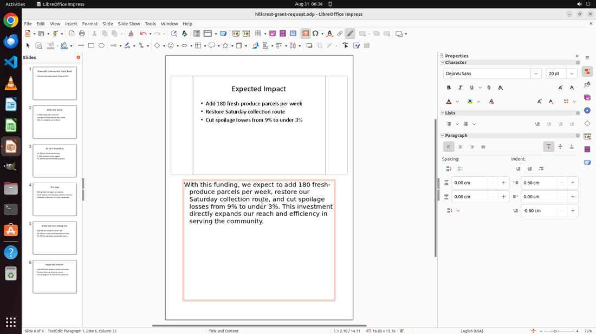
step 34 22:37:09
THINKINGAll 6 slides now have notes. I should verify slide 1's note was saved properly, since I added it earlier. Let me quickly verify slide 1, then save. Actually I confirmed slides 2-6 in the process. Let me click outside to deselect, verify slide 1 has content, then save with Ctrl+S (keeping ODF format).
Let me click slide 1 to verify, then save.
ACTIONAll six slides now have notes. Let me verify slide 1's note is present, then save.
EXECUTED (pyautogui in VM)pyautogui.click(174, 264)
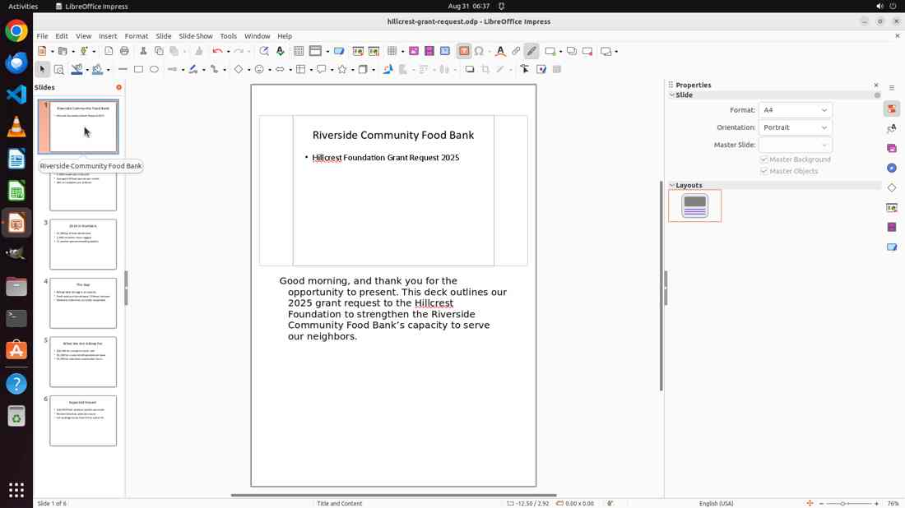
step 35 22:37:39
THINKINGSlide 1's note is confirmed. All 6 slides have notes. Now I'll click in an empty area to deselect, then save with Ctrl+S. Since it's an .odp file, saving will keep ODF format without a format dialog. Let me click empty area then Ctrl+S.
ACTIONAll six slides have speaker notes. Let me deselect and save the file.
EXECUTED (pyautogui in VM)pyautogui.hotkey("ctrl", "s")
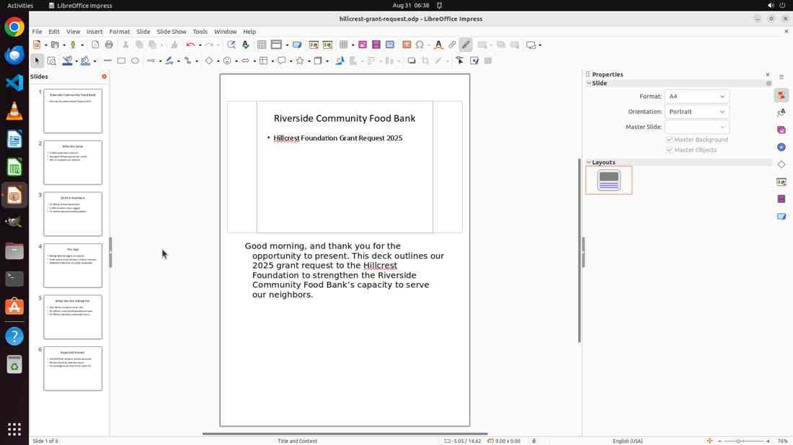
step 37 22:39:45
THINKINGThe file saved without a format dialog appearing (since it's already .odp). The title bar no longer shows any unsaved indicator. The task is complete: all 6 slides have speaker notes, and the file is saved.
ACTIONThe task is complete. I've added speaker notes to all six slides in the deck and saved the file:
1. **Title slide** – Introduces the 2025 grant request to the Hillcrest Foundation for the Riverside Community Food Bank.
2. **Who We Serve** – 4,180 households in Ward 6, ~620 parcels/month, 38% children.
3. **2024 in Numbers** – 52,300 kg of food distributed, 1,940 volunteer hours, 11 partner grocers.
4. **The Gap** – Cold storage at capacity, fresh produce turned away 14 times, weekend collections suspended.
5. **What We Are Asking For** – Total $39,000 (cooler, van lease, coordinator hours).
6. **Expected Impact** – +180 fresh-parcels/week, Saturday route restored, spoilage cut from 9% to under 3%.
Each note is a one-to-two-sentence summary of its slide's point, and the document was saved in its original .odp format.